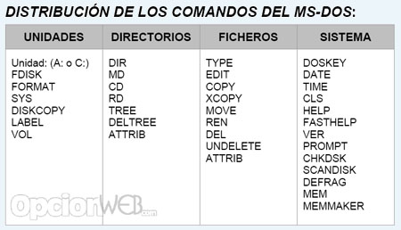
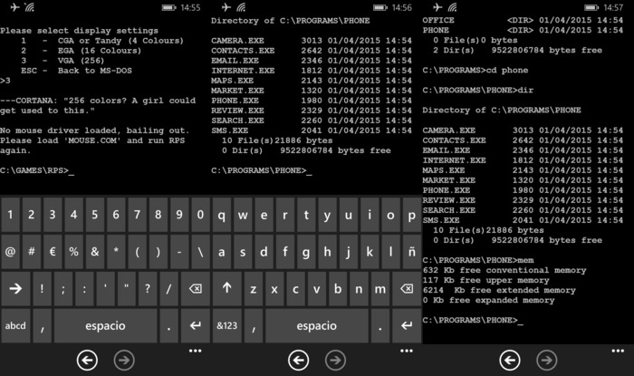
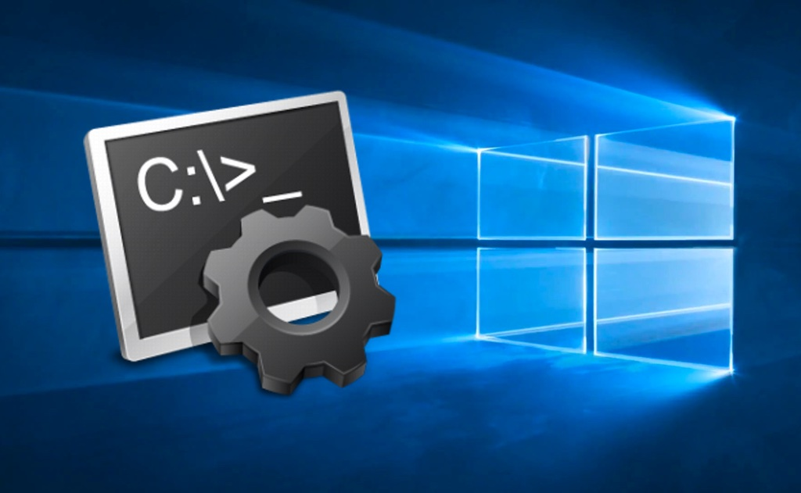

COMANDOS D.O.S
Todos los sistemas Windows incluyen una serie de comandos que
permiten transmitir órdenes directamente al sistema operativo. Son
los conocidos como comandos CMD, comandos de DOS o comandos
MS-DOS. Se trata de simples instrucciones que se pueden usar de
formas diferentes, la más conocida de ellas es introduciéndolos en
la consola de comandos CMD (de hecho, «CDM» corresponde al nombre
del comando o ejecutable que abre la ventana o símbolo de
sistema), aunque también se pueden utilizar en scripts o en
archivos batch. La consola de comandos CMD, intérprete de comandos
o Símbolo del sistema como algunos la conocen, es una herramienta
incluida en todas las versiones de Windows. Es una ventana negra
donde se escriben los comandos con las ordenes y opciones
necesarias y se presiona la tecla Enter para ejecutar dicho
comando.
Lista de todos los comandos CMD incluidos en Windows
-
ARP: omando MS-DOS que mantiene en cache la
correspondencia entre las direcciones IP y las direcciones
físicas del adaptador o tarjeta de red. Es utilizado en tareas
de redes para optimizar el rendimiento de las conexiones y para
solucionar conflictos.
-
ASSOC: Muestra o modifica las asociaciones de las
extensiones de archivos, o sea la acción que Windows debe
realizar de acuerdo a la extensión que posea el archivo.
-
AT: El comando AT programa la ejecución de comandos y
programas en un equipo a una hora y fecha especificadas. El
servicio de programación debe estar en ejecución para utilizar
el comando AT.
-
ATTRIB: Muestra o cambia los atributos de un archivo. En
Windows se le asigna a cada archivo, de acuerdo a la función o
al objetivo que van a desempeñar en el equipo un atributo, ya
sea de archivo oculto, de sistema, solo lectura, etc. Con el
comando ATTRIB es posible saber los establecidos en un archivo
determinado y retirárselo o asignarle otro.
-
AUDITPOL: Es usado para mostrar o cambiar configuraciones
de permisos.
-
BITSADMIN: Es usado para crear, administrar y monitorear
tareas de descargas y subidas de archivos.
-
BREAK:Establece o elimina la comprobación extendida de
Ctrl+C en la consola.
-
BCDBOOT:Herramienta de reparación y creación de archivos
de arranque BCD. La herramienta de línea de comandos bcdboot.exe
se usa para copiar archivos de arranque imprescindibles a la
partición del sistema y para crear un nuevo almacén de BCD en el
sistema.
-
BCDEDIT:Editor del almacén de datos de la configuración
de arranque (BCD) Puedes usar Bcdedit.exe para agregar,
eliminar, editar y anexar entradas en el almacén de datos de la
configuración de arranque.
-
BOOTCFG:Esta herramienta de línea de comandos se puede
usar para configurar, consultar, cambiar o eliminar la
configuración de la entrada de arranque en el archivo BOOT.INI
en sistemas operativos anteriores a Windows Vista.
-
CACLS:Comando MS-DOS que muestra o modifica las listas de
control de acceso (ACLs) de archivos.
-
CALL:Llama a un segundo batch desde uno en ejecución.
-
CD:Muestra el nombre o cambia al directorio actual.
-
CHCP:Muestra o establece el número de página de códigos
activa.
-
CHDIR:Muestra el nombre o cambia al directorio actual,
igual que CD.
-
CHKDSK:Chequea, comprueba y repara errores de disco.
-
CHOICE:Esta herramienta permite que los usuarios
seleccionen un elemento de una lista de opciones y devuelve el
índice de la opción seleccionada.
-
CIPHER:Muestra o altera el cifrado de directorios
[archivos] en particiones NTFS.
-
CLEANMGR:Comando MS-DOS que libera espacio en disco,
permite guardar en memoria tus opciones.
-
CLIP:Redirecciona el resultado de las herramientas de la
línea de comandos al Portapapeles de Windows. Esta salida de
texto se puede pegar en otros programas.
-
CLS:Borra y aclara los símbolos o texto en la pantalla.
- CMD:Inicia una nueva instancia de la consola.
-
CMDKEY:Crea, presenta y elimina nombres de usuario y
contraseñas almacenados.
-
COLOR:Establece los colores de primer plano y fondo de la
consola.
-
COMP:Comando DOS que compara el contenido de dos archivos
o un conjunto de archivos.
-
COMPACT:Este comando CMD muestra o cambia el estado de
compresión de archivos en particiones NTFS.
-
CONVERT:Comando MS-DOS que convierte volúmenes FAT a
volúmenes NTFS. No puede convertir la unidad actual.
- COPY:Copia uno o más archivos en otra ubicación.
-
CSCRIPT:Permite ejecutar en la consola archivos VBS
conteniendo scripts escritos en lenguaje VBScript. También puede
utilizarse en archivos batch con la opción //B, con lo que se
evitarán los mensajes de error y avisos de secuencias de
comandos.
- DATE:Muestra o establece la fecha.
- DEL:limina uno o más archivos.
-
DEFRAG: Localiza y consolida archivos fragmentados en
volúmenes locales para mejorar el rendimiento del sistema.
-
DIR:Muestra una lista de archivos y subdirectorios en un
directorio.
-
DISM:Ofrece información, instala, desinstala, configura y
actualiza características adicionales y paquetes de imágenes de
Windows. Por ejemplo, para mostrar las características
instaladas de Windows que se pueden desinstalar usa:DISM.exe
/Online /English /Get-Features /Format:Table.
- DISKCOMP:Compara el contenido de dos disquetes.
-
DISKCOPY: Copia el contenido de un disquete en otro.
-
DISKPART:Muestra o configura las propiedades de partición
de disco.
-
DOSKEY:Este comando CMD edita líneas de comando, memoriza
comandos de Windows y crea macros.
-
DRIVERQUERY:Muestra el estado y las propiedades actuales
del controlador de dispositivo.
-
ECHO:Muestra mensajes, o activa y desactiva el eco.
-
ENDLOCAL:Termina la búsqueda de variables de entorno del
archivo por lotes.
- ERASE:Elimina uno o más archivos, igual que DEL.
-
EXPAND: Comando MS-DOS que expande uno o varios archivos
comprimidos.
-
EXIT:Sale del programa CMD.EXE (interfaz de comandos).
-
FC:Compara dos archivos o conjunto de archivos y muestra
las diferencias entre ellos.
-
FIND:Busca una cadena de texto en uno o más archivos.
- FINDSTR:Busca cadenas de texto en archivos.
-
FOR:Ejecuta un comando de forma simultánea en varios
archivos, permite reducir la cantidad de código necesario en
varias tareas. Es uno de los comandos que ofrece mayores
beneficios prácticos.
-
FORFILES:Comando de uso algo similar a FOR, selecciona
uno o varios archivos y ejecuta un coman do en cada uno de
ellos. Permite multitud de opciones útiles poco explotadas.
-
FORMAT:Permite darle diferentes formatos a discos duros u
otros dispositivos para usarlo con Windows.
-
FSUTIL:Comando DOS que muestra o configura las
propiedades de sistema de archivos. Posee varios subcomandos
para la administración efectiva del sistema de archivos y
volúmenes.
-
FTYPE:Muestra o modifica los tipos de archivo usados en
una asociación de extensión de archivo.
-
GOTO:Direcciona el intérprete de comandos de Windows a
una línea en un archivo batch. GPRESULT: Comando MS-DOS que
muestra información de directivas de grupo por equipo o usuario.
-
GPUPDATE:Actualiza los cambios hechos en el Editor de
directivas de grupo local.Permite que se active cualquiera de
las directivas establecidas ya sea inmediatamente, al reiniciar
o al iniciar sesión. Para lograr que se activen inmediatamente
usa: GPUPDATE /force.
-
GRAFTABL:Permite a Windows mostrar un juego de caracteres
extendidos en modo gráfico.
-
HELP:Proporciona información de ayuda para los comandos
de Windows.
-
ICACLS:Comando MS-DOS que Mmestra, modifica, hace copias
de seguridad o restaura listas de control de acceso (ACL) para
archivos y directorios.
-
IF:Ejecuta comandos de forma condicional, se utiliza para
definir valores de error, comparar cadenas, demostrar existencia
de archivos y hacer comparaciones matemáticas.
-
IPCONFIG:Muestra los parámetros de una conexión de red.
De forma predeterminada, se muestra solamente la dirección IP,
la máscara de subred y la puerta de enlace predeterminada para
cada adaptador enlazado conTCP/IP.
-
LABEL:Este comando CMD Crea, cambia o elimina la etiqueta
del volumen de un disco.
-
MEM:Muestra la cantidad de memoria libre y usada en el
sistema.
- MD:Crea un directorio o carpeta.
-
MKDIR:Comando DOS para crea un directorio, igual que el
anterior.
-
MKLINK:Crea vínculos simbólicos y vínculos físicos.
- MODE:Configura un dispositivo de sistema.
-
MORE:Comando MS-DOS que muestra la información pantalla
por pantalla.
-
MOVE:Mueve uno o más archivos de un directorio a otro en
la misma unidad.
- MSTSC:Inicia una conexión remota al escritorio.
-
NBTSTAT:Muestra las estadísticas del protocolo y las
conexiones actuales de TCP/IP usando NBT (NetBIOS sobre TCP/IP).
-
NET:Configura una amplia variedad de parámetros en redes.
-
NETCFG:Es utilizado para instalar Windows Preinstallation
Environment (WinPE), una versión minima y ligera de Windows
usada por desarrolladores.
-
NETSHEl:Comando NETSH (Network Shell) permite configurar,
determinar conflictos y administrar diferentes componentes de
redes mediante la línea de comandos de forma local o remota.
Muestra y configura el estatus de los componentes de los
protocolos de redes instalados. Los comandos de Netsh están
organizado en forma de árbol, cada tecnología y protocolo tiene
su propio contexto.
-
NETSTAT:Muestra estadísticas del protocolo y conexiones
TCP/IP actuales. Permite el monitoreo de todas las conexiones
activas.
-
NLSFUNC:Carga la información especifica de un país o
región.
-
NLTESTEl:Comando NLTEST se utiliza para realizar pruebas
mediante canales seguros entre los ordenadores Windows de
diferentes dominios y entre controladores de dominio que son de
confianza.
-
NSLOOKUP:Este comando CMD muestra información sobre los
servidores DNS asignados a tu conexión de red. Permite hacer
peticiones a estos servidores.
-
OCSETUP:Inicia Windows Optional Component Setup
herramienta que instala opciones adicionales de Windows.
-
OPENFILES:Comando DOS que muestra archivos compartidos
abiertos por usuarios remotos.
-
PATH:Muestra o establece una ruta de búsqueda para
archivos ejecutables.
-
PAUSE:Comando MS-DOS que pausa la consola y muestra un
mensaje.
-
PING:Permite probar una conexión de red, enviando y
recibiendo un paquete de datos.
-
POPD:estaura el valor anterior del directorio actual
guardado por PUSHD.
-
POWERSHELL:jecuta una instancia de Windows PowerShell, la
nueva consola de comandos que incluye Windows en sistemas
posteriores a Windows Vista. Al mostrarse PS en el símbolo de la
consola significa que te encuentras en el entorno de PowerShell,
por lo que introduzcas a partir de ese momento estará
relacionado con este intérprete, para volver a la consola solo
escribe CMD y presiona Enter.
- PRINT: Imprime un archivo de texto.
- PROMPT:Cambia el símbolo de comandos de Windows.
-
PUSHD:Comando MS-DOS que guarda el directorio actual y
después lo cambia.
-
QAPPSRV:Muestra los servidores host de sesión de
Escritorio remoto disponibles en la red.
- QPROCESS:Muestra información sobre procesos
-
QUERY:Muestra el status actual y los parámetros de un
servicio especifico.
-
QUSER:Mostrar información sobre los usuarios que han
registrado la entrada en el sistema.
-
QWINSTA:Muestra información sobre las sesiones de
Escritorio remoto.
-
RASDIAL:Es usado para iniciar o detener una conexión de
acceso telefónico o dial up.
- RD:Quita o elimina un directorio o carpeta.
-
RECOVER:Comando DOS para recuperar la información legible
de un disco dañado o defectuoso.
-
REG: Es usado para administrar todos los parámetros del
Editor del Registro desde la línea de comandos y archivos batch.
Es posible agregar, modificar claves, valores, exportar ramas,
etc. El comando REG se compone de varios subcomandos, cada uno
para un uso completamente diferente, son: REG QUERY, REG ADD,
REG DELETE, REG COPY, REG SAVE ,REG RESTORE, REG LOAD, REG
UNLOAD, REG COMPARE, REG EXPORT, REG IMPORT y REG FLAGS.
-
REGEDIT:El comando REGEDIT permite importar, exportar o
eliminar configuraciones en el registro desde un archivo de
texto plano de extensión .reg.
-
REGSVR32: Registra librerías DLL para incorporarlas al
registro.
-
RELOG:Relog crea nuevos registros de rendimiento a partir
de datos de registros de rendimiento existentes cambiando el
intervalo de muestreo o convirtiendo el formato de archivo.
Admite todos los formatos de registro de rendimiento, incluidos
los registros comprimidos de Windows NT 4.0
-
REM:Marca comentarios en archivos por lotes o CONFIG.SYS.
La línea en un batch que comienza con REM es considerada un
comentario.
-
REN:Comando DOS que cambia el nombre de uno o más
archivos.
-
RENAME:Cambia el nombre de uno o más archivos, igual que
el anterior.
- REPLACE:Reemplaza archivos.
- RMDIR:Quita un directorio.
-
ROBOCOPY:Utilidad avanzada para copiar carpetas y
directorios en Windows.
-
RESET SESSION:(Rwinsta) Volver a establecer el hardware y
el software de subsistema de la sesión con los valores iniciales
conocidos.
-
ROUTE: Comando DOS para manipular tablas de enrutamiento
de red.
- RPCPING:Hace ping al servidor mediante RPC.
-
RUNAS:Es usado para ejecutar un programa utilizando
credenciales o derechos de otro usuario.
-
SECEDIT:Analiza la seguridad del sistema y hace la
comparación con una plantilla determinada.
-
SET:Muestra, establece o quita variables de entorno de
Windows.
-
SETLOCAL:Comienza la sección de cambios locales de
entorno en la consola.
-
SETVER:El comando SETVER se utiliza para establecer el
número de versión de MS-DOS que se informa a un programa.
-
SETX:rea o modifica variables de entorno en el entorno de
usuario o de sistema. Puede establecer variables basadas en
argumentos, claves de Registro o entrada de archivos.
-
SC:Muestra o configura servicios (procesos en segundo
plano).
-
SCHTASKS:Ejecuta el Programador de tareas. Programa
comandos y programas para ejecutarse en un equipo.
-
SFC:Comprobador de recursos de Microsoft Examina la
integridad de todos los archivos de sistema protegidos y
reemplaza las versiones incorrectas por las correctas de
Microsoft.
-
SHADOW:Supervisar otra sesión de Servicios de Escritorio
remoto.
-
SHARE:El comando SHARE se utiliza para bloquear archivos
y funciones en MS-DOS.
- SXSTRACE:Utilidad de seguimiento de WinSxs.
-
SHIFT:Cambia posición de modificadores reemplazables en
archivos por lotes.
-
SHUTDOWN:Permite el apagado, el reinicio, suspensión e
hibernación local o remoto de un equipo.
-
SORT:Ordena los resultados de un comando seleccionado,
por ejemplo los resultados de una búsqueda con FIND.
-
START:Inicia otra ventana para ejecutar un programa o
comando.
-
SUBST:Asocia una ruta de acceso con una letra de unidad.
-
SYSTEMINFO:Muestra las propiedades y la configuración
específicas del equipo.
-
TAKEOWN:Esta herramienta permite que el administrador
recupere el acceso a un archivo denegado mediante la
reasignación de la propiedad del archivo.
-
TASKLIST:Muestra todas las tareas en ejecución, incluidos
los servicios.
-
TASKKILL:Comando MS-DOS que termina o interrumpe un
proceso o aplicación que se está ejecutando.
-
TCMSETUP:Este comando DOS es usado para configurar o
deshabilitar el cliente de telefonía Telephony Application
Programming Interface (TAPI).
- TIME:uestra o establece la hora del sistema.
-
TIMEOUT:Esta utilidad acepta un parámetro de tiempo de
espera para esperar el un período de tiempo determinado (en
segundos) o hasta que se presiona alguna tecla. También acepta
un parámetro para omitir la presión de tecla.
-
TITLE:Establece el título de la ventana de una sesión de
CMD.EXE.
-
TRACERPT:El comando TRACERPT se utiliza para procesar los
registros de seguimiento de sucesos o datos en tiempo real.
-
TRACERT:Permite hacer un seguimiento de la ruta entre un
equipo y otro en la red, es muy utilizado para conocer dónde se
ha detenido un paquete de datos en la red.
-
TREE:Comando DOS que muestra gráficamente la estructura
de directorios de una unidad o ruta de acceso.
-
TSDISCON:Desconecta una sesión de Escritorio remoto.
- TSKILL:Termina un proceso.
- TYPE:Muestra el contenido de un archivo de texto.
-
TYPEPERF:Typeperf escribe información de rendimiento en
la ventana de comandos o en un archivo de registro. Para detener
Typeperf presione CTRL+C
- TZUTIL: Utilidad de zona horaria de Windows.
-
UNLODCTR: Quita el nombre de contador y texto explicativo
para el contador extensible especificado.
- VER:Muestra la versión de Windows.
-
VERIFY:Comunica a Windows si debe comprobar que los
archivos se escriben de forma correcta en un disco.
-
VOL:Muestra la etiqueta del volumen y el número de serie
del disco.
-
VSSADMIN:Herramienta administrativa del Servicio de
instantáneas de volumen, las imágenes creadas por Windows para
la función Restaurar sistema. Por ejemplo, para listar todas las
imágenes existentes usa: VSSADMIN list shadows.
-
W32TM:Herramienta usada para diagnosticar conflictos del
equipo local o de uno en la red con el servicio Hora de Windows
(Windows time) al tratar de sincronizar o de actualizar el reloj
del sistema.
-
WAITFOR:Esta herramienta envía o espera a que llegue una
señal en un sistema. Si no se especifica /S la señal se
difundirá a todos los sistema de un dominio. Si se especifica /S
la señal sólo se enviará al dominio especificado.
-
WBADMIN:Herramienta de línea de comandos de copia de
seguridad.
-
WEVTUTIL:erramienta de línea de comandos de copia de
seguridad WEVTUTIL: Utilidad de línea de comandos de eventos de
Windows. Permite recuperar información acerca de registros de
eventos y publicadores, instalar y desinstalar manifiestos de
eventos, ejecutar consultas y exportar, archivar y borrar
registros.
-
WHERE:Comandos DOS que muestra la ubicación de archivos
que coinciden con el patrón de búsqueda. De manera
predeterminada, la búsqueda se realiza en el directorio actual y
en las rutas especificadas por la variable de entorno PATH.
-
WHOAMI:Esta utilidad se puede usar para obtener el
destino de información de grupo y nombre de usuario junto con
los respectivos identificadores de seguridad (SID), privilegios,
identificador de inicio de sesión (Id. de inicio de sesión) del
usuario actual (testigo de acceso) en el sistema local. Es
decir, quién es el usuario actualmente conectado. Si no se
especifica ningún modificador, la herramienta muestra nombre de
usuario en formato NTLM (dominio\nombre_usuario).
-
WINHLP32:Comando de MS-DOS que ejecuta los archivos de
ayuda de Windows que usan la extensión HLP.
-
WINRM:Herramienta de la línea de comandos de
Administración remota de Windows Administración remota de
Windows (WinRM) es la implementación de Microsoft del protocolo
WS-Management, que proporciona una forma segura de comunicarse
con equipos locales y remotos mediante servicios Web.
-
WINRS:Comando DOS que abre una ventana de comandos en
modo seguro con un equipo en la red.
-
WINSAT:Herramienta de evaluación del sistema de Windows
(WinSAT).
-
WMIC:Muestra información de WMI en el shell de comandos
interactivo. Permite acceder a todo tipo de informaciones, tanto
de el equipo local o a otro en la red, enumera todos los datos
del hardware y del software disponibles.
- XCOPY: Copia archivos y árboles de directorios.


